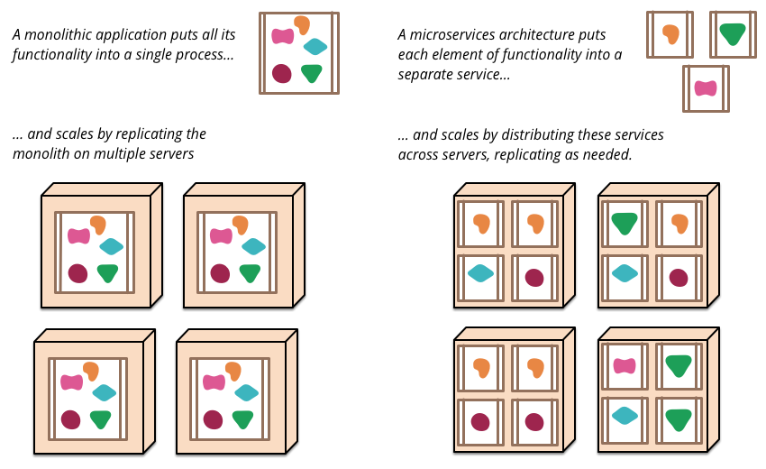

微服务
翻译自 Martin Fowler 网站 Microservices 一文。文章篇幅较长，阅读需要一点耐心。
本人水平有限，若有不妥之处，还请各位帮忙指正，谢谢。
过去几年中出现了“微服务架构”这一术语，它描述了将软件应用程序设计为若干个可独立部署的服务套件的特定方法。尽管这种架构风格尚未有精确的定义，但围绕业务能力、自动部署、端点智能以及语言和数据的分散控制等组织来说，它们还是存在着某些共同特征。
“微服务”——在拥挤的软件架构街道上又一个新名词。虽然我们的自然倾向是对它轻蔑一瞥，但这一术语描述了一种越来越具有吸引力的软件系统风格。在过去几年中，我们已经看到许多项目使用了这种风格，到目前为止其结果都是正向的，以至于它变成了我们 ThoughtWorks 许多同事构建企业应用程序的默认风格。然而遗憾的是，并没有太多信息可以概述微服务的风格以及如何实现。
简而言之，微服务架构风格[1]是一种将单个应用程序开发为一套小型服务的方法，每个小型服务都在自己的进程中运行，并以轻量级机制（通常是 HTTP 资源 API）进行通信。这些服务围绕业务功能构建，可通过全自动部署机制来独立部署。这些服务共用一个最小型的集中式管理，它们可以使用不同的编程语言编写，并使用不同的数据存储技术。
在开始解释微服务风格之前，将它与单体（monolithic）风格进行比较是有用的：单体应用程序被构建为单一单元。企业应用程序通常由三个部分构成：客户端用户界面（由用户机器上的浏览器中运行的 HTML 页面和 Javascript 组成）、数据库（由许多表组成，通常是在关系型数据库中管理）系统、服务器端应用程序。服务器端应用程序处理 HTTP 请求，执行一些逻辑处理，从数据库检索和更新数据，选择数据并填充到要发送到浏览器的 HTML 视图中。这个服务器端应用程序是一个整体——一个逻辑可执行文件[2]。对系统的任何更改都涉及构建和部署新版本的服务器端应用程序。
这种单体服务器是构建这种系统的自然方式。处理一个请求的所有逻辑都在一个进程中运行，允许你使用语言的基本功能将应用程序划分为类、函数和命名空间。需要注意的是，你可以在开发人员的笔记本电脑上运行和测试应用程序，并使用部署管道确保对程序做出的改动被适当测试并部署到生产环境中。你可以通过在负载均衡器后面运行许多实例来水平扩展整体块。
单体应用程序可以取得成功，但越来越多的人对它们感到不满——尤其是在将更多应用程序部署到云的时候。变更周期被捆绑在一起——即使只是对应用程序的一小部分进行了更改，也需要重建和部署整个单体应用。随着时间的推移，通常很难保持良好的模块化结构，也更难以保持应该只影响该模块中的一个模块的更改。对系统进行扩展时，不得不扩展整个应用系统，而不能仅扩展该系统中需要更多资源的那些部分。

这些不满催生了微服务架构风格：将应用程序构建为服务套件。除了服务可独立部署、独立扩展的事实之外，每个服务还提供了一个牢固的模块边界，甚至允许以不同的编程语言编写不同的服务。他们也可以由不同的团队管理。
我们并不认为微服务风格是新颖的或创新的，其根源至少可以追溯到 Unix 的设计原则。但我们认为没有足够多的人考虑微服务架构，如果使用它，许多软件的开发会变得更好。
微服务架构的特征
虽然不能说微服务架构风格有正式的定义，但我们可以尝试描述一下我们认为的在符合这个标签的架构中，它们所具有的一些共同特征。与概述共同特征的任何定义一样，并非所有微服务架构都具有所有特征，但我们确实期望大多数微服务架构都具有大多数特征。虽然我们的作者一直是这个相当宽松的社区的活跃成员，但我们的本意还是尝试描述我们两人在自己和自己所了解的团队的工作中所看到的情况。特别要说明的是，我们没有制定一些相关的定义。
通过服务进行组件化
只要我们参与软件行业，就一直希望通过将组件集成在一起来构建系统，就像我们在物理世界中看到的事物的构建方式一样。在过去的几十年中，我们已经看到了大多数语言平台的公共软件库都取得了极大的进展。
在谈论组件时，就会碰到一个有关定义的难题，即什么是组件？我们的定义是，组件是可独立更换和升级的软件单元。
微服务架构也会使用软件库，但组件化软件的主要方式是拆分为多个服务。我们把库定义为链接到程序并使用内存函数调用来调用的组件，而服务是一种进程外组件，通过 Web 服务请求或远程过程调用等机制进行通信。（这与许多面向对象程序中的服务对象的概念是不同的[3]。）
将服务作为组件（而不是库）的一个主要原因是服务可以独立部署。如果你有一个应用程序[4]是由单一进程里的多个库组成，任何一个组件的更改都会导致整个应用程序的重新部署。但如果应用程序可拆分为多个服务，那么单个服务的变更只需要重新部署该服务即可。当然这也不是绝对的，一些服务接口的修改可能会导致多个服务之间的协同修改，但一个好的微服务架构的目的是通过内聚服务边界和服务协议的演进机制来最小化这些协同修改。
将服务用作组件的另一个结果是更明确的组件接口。大多数语言没有一个良好的机制来定义显式发布的接口。通常，它只是文档和规则来阻止客户端破坏组件的封装，这会导致组件之间过于紧耦合。通过使用显式远程调用机制，服务可以更轻松地避免这种情况。
像这样使用服务确实存在一些不好的地方。远程调用比进程内调用更昂贵，远程 API 需要设计成较粗的粒度，这通常更难以使用。如果你需要更改组件之间的职责分配，那么当你跨越进程边界时，这种组件行为的改动会更加难以实现。
近似地，我们可以把一个个服务映射为一个个运行时进程，但这仅仅是一个近似而已。一个服务可能包括多个始终一起开发和部署的进程，比如一个应用系统的进程和仅由该服务使用的数据库。
围绕业务能力进行组织
在将大型应用程序拆分为多个部分时，管理层往往侧重于技术层面，从而导致 UI 团队、服务器端逻辑团队、数据库团队的划分。当团队按照这些方式分开时，即便是简单的更改也可能导致跨团队项目的时间和预算批准。一个聪明的团队将围绕这个进行优化，“两害相权取其轻”——只需将逻辑强制应用到他们可以访问的任何应用程序中。换句话说，逻辑无处不在。这是康威定律[5]的一个例子。
任何设计系统（广义上的）的组织都会产生一种设计，其结构是组织通信结构的副本。
—— 梅尔文•康威，1967 年

微服务采用不同的划分方式，它是围绕业务功能将系统拆分为多个服务 。这些服务为该业务领域采用广泛的软件实现，包括用户界面、持久化存储和任何外部协作。因此，团队是跨职能的，包括开发所需的全部技能：用户体验、数据库和项目管理。

以这种方式组建的一家公司是 www.comparethemarket.com。跨职能团队负责构建和运营每个产品，每个产品拆分为多个独立的服务，彼此通过消息总线来通信。
大型单体应用程序也可以围绕业务功能进行模块化，尽管这不是常见的情况。当然，我们会敦促构建单体应用系统的大型团队根据业务线来将自己分解为若干小团队。我们在这里看到的主要问题是，它们往往围绕太多的上下文进行组织。如果单体跨越了模块边界，对团队的个体成员来说，很难将它们装入短期的记忆中。此外，我们看到模块化生产线需要大量的规则来执行。服务组件所要求的更加明确的分离，使得它更容易保持团队边界清晰。
是产品不是项目
我们看到的大多数应用程序开发工作都使用这样一个项目模式：目标是交付一些软件，然后就完工了。一旦完成后，软件将移交给维护组织，然后构建它的项目团队也随之解散了。
微服务支持者倾向于避免这种模式，而是认为团队应该负责产品的整个生命周期。对此一个共同的启示是亚马逊的 “you build, you run it” 的概念，开发团队对生产中的软件负全部责任。这使开发者经常接触他们的软件在生产环境如何工作，并增加与他们的用户联系，因为他们必须承担至少部分的支持工作。
产品心态与业务能力的联系紧密相连。要持续关注软件如何帮助用户提升业务能力，而不是把软件看成是将要完成的一组功能。
没有理由说为什么这种方法不能用在单一应用程序上，但较小的服务粒度，使得它更容易在服务开发者和用户之间建立个人关系。
智能端点和哑管
在不同进程之间建立通信时，我们已经看到许多产品和方法，都强调将大量的智能特性放入通信机制本身。一个很好的例子是企业服务总线（ESB），其中 ESB 产品通常包括用于消息路由、编排、转换和应用业务规则的复杂工具。
微服务社区倾向于采用另一种方法：智能端点和哑管。基于微服务构建的应用程序的目标是尽可能的解耦和尽可能的内聚——他们拥有自己的领域逻辑，他们的行为更像经典 UNIX 理念中的过滤器——接收请求，应用适当的逻辑并产生响应。使用简单的 REST 风格的协议来编排它们，而不是使用像 WS-Choreography 或者 BPEL 或者通过中心工具编制(orchestration)等复杂的协议。
最常用的两种协议是带有资源 API 的 HTTP 请求-响应和轻量级消息传递[8]。对第一种协议最好的表述是
本身就是 web，而不是隐藏在 web 的后面。
——Ian Robinson
微服务团队使用的规则和协议，正是构建万维网的规则和协议(在更大程度上是 UNIX 的)。从开发者和运营人员的角度讲，通常使用的资源可以很容易的缓存。
第二种常用方法是在轻量级消息总线上传递消息。选择的基础设施是典型的哑的(哑在这里只充当消息路由器)——像 RabbitMQ 或 ZeroMQ 这样简单的实现仅仅提供一个可靠的异步交换结构 ——在服务里，智能特性仍旧存在于那些生产和消费诸多消息的各个端点中，即存在于各个服务中。
单体应用中，组件都在同一进程内执行，它们之间通过方法调用或函数调用通信。把单体变成微服务最大的问题在于通信模式的改变。一种幼稚的转换是从内存方法调用转变成 RPC，这导致频繁通信且性能不好。相反，你需要用粗粒度通信代替细粒度通信。
去中心化的治理
集中治理的一个后果是单一技术平台的标准化发展趋势。经验表明，这种方法正在收缩 ——不是每个问题都是钉子，不是每个问题都是锤子。我们更喜欢使用正确的工具来完成工作，而单体应用程序在一定程度上可以利用语言的优势，这是不常见的。
把单体的组件分裂成服务，在构建这些服务时可以有自己的选择。你想使用 Node.js 开发一个简单的报告页面？去吧。用 C++ 实现一个特别粗糙的近乎实时的组件？好极了。你想换用一个更适合组件读操作数据的不同风格的数据库？我们有技术来重建它。
当然，仅仅因为你可以做些什么，而不意味着你应该这样做——但用这种方式划分系统意味着你可以选择。
团队在构建微服务时也更喜欢用不同的方法来达标。他们更喜欢生产有用的工具这种想法，而不是写在纸上的标准，这样其他开发者可以用这些工具解决他们所面临的相似的问题。有时，这些工具通常在实施中收获并与更广泛的群体共享，但不完全使用一个内部开源模型。现在 git 和 github 已经成为事实上的版本控制系统的选择，在内部开放源代码的实践也正变得越来越常见。
Netflix 是遵循这一理念的一个很好的例子。尤其是，以库的形式分享有用的且经过市场检验的代码，这激励其他开发者用类似的方式解决相似的问题，同时还为采用不同方法敞开了大门。共享库倾向于聚焦在数据存储、进程间通信和我们接下来要深入讨论的基础设施自动化的共性问题。
对于微服务社区来说，开销特别缺乏吸引力。这并不是说社区不重视服务合约。恰恰相反，因为他们有更多的合约。只是他们正在寻找不同的方式来管理这些合约。像 Tolerant Reader 和 Consumer-Driven Contracts 这样的模式通常被用于微服务。这些援助服务合约在独立进化。执行消费者驱动的合约作为构建的一部分，增加了信心并对服务是否在运作提供了更快的反馈。事实上，我们知道澳大利亚的一个团队用消费者驱动的合约这种模式来驱动新业务的构建。他们使用简单的工具定义服务的合约。这已变成自动构建的一部分，即使新服务的代码还没写。服务仅在满足合约的时候才被创建出来 - 这是在构建新软件时避免 "YAGNI"[9] 困境的一个优雅的方法。围绕这些成长起来的技术和工具，通过减少服务间的临时耦合，限制了中心合约管理的需要。
也许去中心化治理的最高境界就是亚马逊广为流传的 build it/run it 理念。团队要对他们构建的软件的各方面负责，包括 7*24 小时的运营。这一级别的责任下放绝对是不规范的，但我们看到越来越多的公司让开发团队负起更多责任。Netflix 是采用这一理念的另一家公司[11]。每天凌晨 3 点被传呼机叫醒无疑是一个强有力的激励，使你在写代码时关注质量。这是关于尽可能远离传统的集中治理模式的一些想法。
分散数据管理
数据管理的去中心化有许多不同的呈现方式。在最抽象的层面上，这意味着使系统间存在差异的世界概念模型。在整合一个大型企业时，客户的销售视图将不同于支持视图，这是一个常见的问题。客户的销售视图中的一些事情可能不会出现在支持视图中。它们确实可能有不同的属性和(更坏的)共同属性，这些共同属性在语义上有微妙的不同。
这个问题常见于应用程序之间，但也可能发生在应用程序内部，尤其当应用程序被划分成分离的组件时。一个有用的思维方式是有界上下文(Bounded Context)内的领域驱动设计(Domain-Driven Design, DDD)理念。DDD 把一个复杂域划分成多个有界的上下文，并且映射出它们之间的关系。这个过程对单体架构和微服务架构都是有用的，但在服务和上下文边界间有天然的相关性，边界有助于澄清和加强分离，就像业务能力部分描述的那样。
和概念模型的去中心化决策一样，微服务也去中心化数据存储决策。虽然单体应用程序更喜欢单一的逻辑数据库做持久化存储，但企业往往倾向于一系列应用程序共用一个单一的数据库——这些决定是供应商授权许可的商业模式驱动的。微服务更倾向于让每个服务管理自己的数据库，或者同一数据库技术的不同实例，或完全不同的数据库系统 - 这就是所谓的混合持久化(Polyglot Persistence)。你可以在单体应用程序中使用混合持久化，但它更常出现在为服务里。

对跨微服务的数据来说，去中心化责任对管理升级有影响。处理更新的常用方法是在更新多个资源时使用事务来保证一致性。这个方法通常用在单体中。
像这样使用事务有助于一致性，但会产生显著地临时耦合，这在横跨多个服务时是有问题的。分布式事务是出了名的难以实现，因此微服务架构强调服务间的无事务协作，对一致性可能只是最后一致性和通过补偿操作处理问题有明确的认知。
对很多开发团队来说，选择用这样的方式管理不一致性是一个新的挑战，但这通常与业务实践相匹配。通常业务处理一定程度的不一致，以快速响应需求，同时有某些类型的逆转过程来处理错误。这种权衡是值得的，只要修复错误的代价小于更大一致性下损失业务的代价。
基建自动化
基础设施自动化技术在过去几年中发生了巨大变化——特别是云和 AWS 的发展降低了构建、部署和运行微服务的操作复杂性。
许多使用微服务构建的产品或系统都是由具有丰富的持续交付和持续集成经验的团队构建的。以这种方式构建软件的团队广泛使用基础设施自动化技术。如下面显示的构建管道所示。

由于这并不是一篇关于持续交付的文章，我们在这里只关注持续交付的几个关键特性。我们希望有尽可能多的信心确保我们的软件正常运行，因此我们进行了大量的自动化测试。想让软件达到“晋级”(Promotion)状态从而“推上”流水线，就意味着要在每一个新的环境中，对软件进行自动化部署。
一个单体应用程序可以非常愉快地通过这些环境构建、测试和推动。事实证明，一旦你为单体投入了自动化整体生产，那么部署更多的应用程序似乎不再那么可怕了。请记住，持续交付的目标之一就是让“部署”工作变得“枯燥”，所以无论是一个还是三个应用程序，只要部署工作依旧很“枯燥”，那么就没什么可担心的了[12]。
我们看到团队大量的基础设施自动化的另一个领域是在管理生产环境中的微服务。与我们上面的断言（只要部署很无聊）相比，单体和微服务之间没有太大的区别，但是每个部署的运行环境可能会截然不同。

设计时为故障做好准备
使用服务作为组件的结果是，需要设计应用程序以便它们能够容忍服务的失败。如果服务提供者商不可用，任何服务呼叫都可能失败，客户必须尽可能优雅地对此做出响应。与单体设计相比，这是一个缺点，因为它这会引入额外的复杂性来处理它。结果是微服务团队不断反思服务失败是如何影响用户体验的。Netflix 的 Simian Army 能够引发服务甚至数据中心的故障在工作日发生故障，从而来测试应用程序的弹性和监控能力。
生产中的这种自动化测试足以让大多数运维团队兴奋得浑身颤栗，就像在一周的长假即将到来前一样。这并不是说单体架构风格不能构建先进的监控系统——只是根据我们的经验，这在单体系统中并不常见罢了。
由于服务可能随时发生故障，因此能够快速检测故障并在可能的情况下自动恢复服务就显得至关重要。微服务应用程序非常重视应用程序的实时监控，比如检查架构元素（数据库每秒获得多少请求）和业务相关度量（例如每分钟收到多少订单）。语义监控可以提供出现问题的早期预警系统，从而触发开发团队跟进和调查。
这对于微服务架构来说尤为重要，因为微服务偏好编排和事件写作，这会导致一些紧急状况。虽然许多权威人士对于偶然事件的价值持积极态度，但事实是，“突发行为”有时可能是一件坏事。监控至关重要，它能够快速发现不良紧急行为并进行修复。
单体系统也可以像微服务一样实现透明的监控——事实上，它们也应该如此。不同之处在于你必须能够知道在不同进程中运行的服务在何时断开了连接。对于同一过程中的库，这种透明性用处并不大。
微服务团队希望看到针对每个服务的复杂监控和日志记录，例如显示“运行/宕机”状态的仪表盘以及各种运维和业务相关的指标。有关断路器状态，当前吞吐量和延迟的详细信息也是我们在工作中经常遇到的其他例子。
演化设计
微服务从业者通常有进化设计的背景，并把服务分解视为进一步的工具，使应用程序开发人员能够控制应用程序中的更改，而不会降低变更速度。变更控制并不一定意味着变更的减少——在正确的态度和工具的帮助下，你可以对软件进行频繁，快速且有良好控制的更改。
每当要试图将软件系统分解为组件时，你就会面临这样的决策，即如何进行拆分——我们决定拆分应用程序的原则是什么？组件的关键属性具有独立替换和可升级性的特点[13]——这意味着我们寻找这些点，想象如何在不影响其协作者的情况下重写组件。实际上，许多微服务组通过明确地期望许多服务被废弃而不是长期演变来进一步考虑这一点。
Guardian 网站是设计和构建成单体应用程序的一个很好的例子，但是它也在微服务方向上不断发展演化。原先的单体系统仍然是网站的核心，但他们更喜欢通过构建一些微服务 API 的方式来添加新的功能。这种方法对于本质上是临时的功能尤其方便，例如处理体育赛事的专用页面。网站的这一部分可以使用快速开发语言快速组合在一起，在赛事结束后立即删除。我们在金融机构看到过类似的方法，为市场机会增加新服务，并在几个月甚至几周后丢弃。
这种强调可替换性的特点，是模块化设计一般性原则的一个特例，即通过变化模式来驱动模块化的实现[14]。大家都愿意将那些同时发生变化的东西放在同一个模块，很少变化的系统模块应该与目前正在经历大量变动的系统处于不同的服务中。如果你发现自己反复更改两项服务，那就表明它们应该合并了。
将组件放入服务中可以为更细粒度的发布计划添加机会。对于单体来说，任何更改都需要完整构建和部署整个应用程序。但是，使用微服务，你只需要重新部署你修改的服务。这可以简化并加快发布过程。缺点是你必须担心一项服务的变化会打破其消费者。传统的集成方法是尝试使用版本控制来解决这个问题，但微服务世界中的偏好是仅仅把使用版本控制作为最后的手段。我们可以通过设计服务尽可能容忍服务提供者的变化来避免大量的版本控制。
微服务是未来吗？
我们写这篇文章的主要目的是解释微服务的主要思想和原则。通过花时间来做到这一点，我们清楚地认为微服务架构风格是一个重要的想法——在研发企业系统时，值得对它进行认真考虑。我们最近使用这种方式构建了几个系统，并且了解到其它团队也赞同这种风格。
我们了解到那些在某种程度上开创这种架构风格的先驱，包括亚马逊、Netflix、英国卫报、英国政府数字化服务中心、realestate.com.au、Forward 和 comparethemarket.com。2013 年的技术会议上充满了一些公司的例子，这些公司正在转向可以归类为微服务的公司，包括 Travis CI。此外，有很多组织长期以来一直在做我们称之为微服务的东西，但没有使用过这个名字。（通常这被标记为 SOA——尽管如我们所说，SOA 有许多相互矛盾的形式。[15]）
然而，尽管有这些积极的经验，但并不是说我们确信微服务是软件架构的未来发展方向。虽然到目前为止我们的经验与整体应用相比是积极的，但我们意识到没有足够的时间让我们做出充分完整的判断。
通常，架构决策所产生的真正效果，只有在该决策做出若干年后才能真正显现。我们已经看到由带着强烈的模块化愿望的优秀团队所做的一些项目，最终却构建出一个单体架构，并在几年之内不断腐化。许多人认为，如果使用微服务就不大可能出现这种腐化，因为服务的边界是明确的，而且难以随意搞乱。然而，对于那些开发时间足够长的各种系统，除非我们已经见识得足够多，否则我们无法真正评价微服务架构是如何成熟的。
有人觉得微服务或许很难成熟起来，这当然是有原因的。在组件化上所做的任何工作的成功与否，取决于软件与组件的匹配程度。准确地搞清楚某个组件的边界的位置应该出现在哪里，是一项困难的工作。进化设计承认难以对边界进行正确定位，所以它将工作的重点放到了易于对边界进行重构之上。但是当各个组件成为各个进行远程通信的服务后，比起在单一进程内进行各个软件库之间的调用，此时的重构就变得更加困难。跨越服务边界的代码移动就变得困难起来。接口的任何变化，都需要在其各个参与者之间进行协调。向后兼容的层次也需要被添加进来。测试也会变得更加复杂。
另一个问题是，如果这些组件不能干净利落地组合成一个系统，那么所做的一切工作，仅仅是将组件内的复杂性转移到组件之间的连接之上。这样做的后果，不仅仅是将复杂性搬了家，它还将复杂性转移到那些不再明确且难以控制的边界之上。当在观察一个小型且简单的组件内部时，人们很容易觉得事情已经变得更好了，然而他们却忽视了服务之间杂乱的连接。
最后，还有一个团队技能的因素。新技术往往会被技术更加过硬的团队所采用。对于技术更加过硬的团队而更有效的一项技术，不一定适用于一个技术略逊一筹的团队。我们已经看到大量这样的案例，那些技术略逊一筹的团队构建出了杂乱的单体架构。当这种杂乱发生到微服务身上时，会出现什么情况？这需要花时间来观察。一个糟糕的团队，总会构建一个糟糕的系统——在这种情况下，很难讲微服务究竟是减少了杂乱，还是让事情变得更糟。
我们听到的一个合理的论点是，你不应该从微服务架构开始，而是从整体开始，保持模块化，并在整体出现问题时将其拆分为微服务。（这个建议并不理想，因为好的进程内接口通常不是一个好的服务接口。）
所以我们谨慎乐观地写下这个。到目前为止，我们已经看到了足够多的微服务风格，觉得它可能是一条值得走的路。我们无法确定最终会在哪里结束，但软件开发的挑战之一是你只能根据你当前必须拥有的不完善信息做出决策。
脚注
1: The term "microservice" was discussed at a workshop of software architects near Venice in May, 2011 to describe what the participants saw as a common architectural style that many of them had been recently exploring. In May 2012, the same group decided on "microservices" as the most appropriate name. James presented some of these ideas as a case study in March 2012 at 33rd Degree in Krakow in Microservices - Java, the Unix Way as did Fred George about the same time. Adrian Cockcroft at Netflix, describing this approach as "fine grained SOA" was pioneering the style at web scale as were many of the others mentioned in this article - Joe Walnes, Dan North, Evan Botcher and Graham Tackley.
2: The term monolith has been in use by the Unix community for some time. It appears in The Art of Unix Programming to describe systems that get too big.
3: Many object-oriented designers, including ourselves, use the term service object in the Domain-Driven Design sense for an object that carries out a significant process that isn't tied to an entity. This is a different concept to how we're using "service" in this article. Sadly the term service has both meanings and we have to live with the polyseme.
4: We consider an application to be a social construction that binds together a code base, group of functionality, and body of funding.
5: The original paper can be found on Melvyn Conway's website here.
6: We can't resist mentioning Jim Webber's statement that ESB stands for "Egregious Spaghetti Box".
7: Netflix makes the link explicit - until recently referring to their architectural style as fine-grained SOA.
8: At extremes of scale, organisations often move to binary protocols - protobufs for example. Systems using these still exhibit the characteristic of smart endpoints, dumb pipes - and trade off transparency for scale. Most web properties and certainly the vast majority of enterprises don't need to make this tradeoff - transparency can be a big win.
9: "YAGNI" or "You Aren't Going To Need It" is an XP principle and exhortation to not add features until you know you need them.
10: It's a little disengenuous of us to claim that monoliths are single language - in order to build systems on todays web, you probably need to know JavaScript and XHTML, CSS, your server side language of choice, SQL and an ORM dialect. Hardly single language, but you know what we mean.
11: Adrian Cockcroft specifically mentions "developer self-service" and "Developers run what they wrote"(sic) in this excellent presentation delivered at Flowcon in November, 2013.
12: We are being a little disengenuous here. Obviously deploying more services, in more complex topologies is more difficult than deploying a single monolith. Fortunately, patterns reduce this complexity - investment in tooling is still a must though.
13: In fact, Dan North refers to this style as Replaceable Component Architecture rather than microservices. Since this seems to talk to a subset of the characteristics we prefer the latter.
14: Kent Beck highlights this as one his design principles in Implementation Patterns.
15: And SOA is hardly the root of this history. I remember people saying "we've been doing this for years" when the SOA term appeared at the beginning of the century. One argument was that this style sees its roots as the way COBOL programs communicated via data files in the earliest days of enterprise computing. In another direction, one could argue that microservices are the same thing as the Erlang programming model, but applied to an enterprise application context.